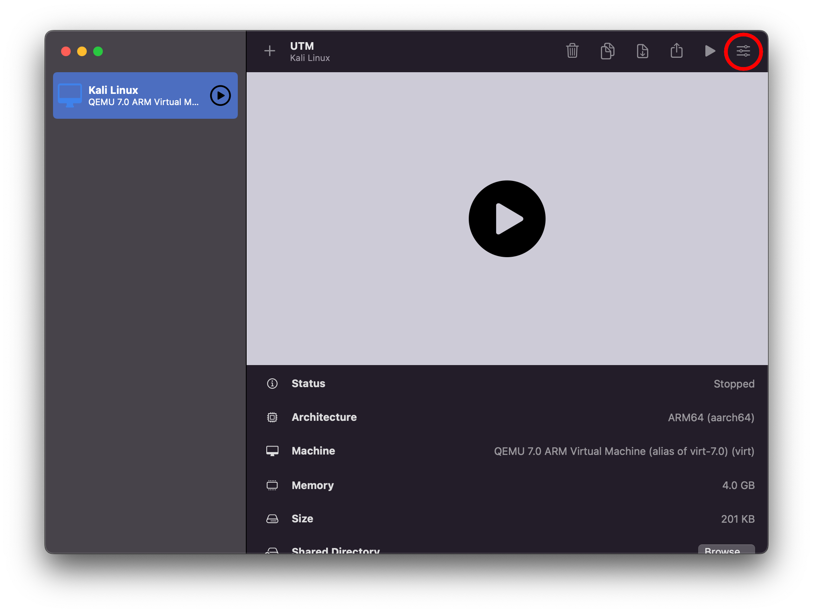

How to Create a Kali Linux Virtual Machine
One of the easiest ways to get started with hacking stuff is to use a Linux environment with all the tools that you will need pre-installed. Although you may wish to run the tools on your own Linux/macOS machine natively, it can be easier to have everything already set up, especially if you are just getting started with hacking.
If you don't fancy setting all this up, and you are a LUHack member, then you can just use our virtual machines. However, they can be a bit slow, so if you want the best experience, it is worth trying to get a virtual machine running on your computer. But if you do want to use them you can get started by looking at this page instead.
How you get up and running with Kali depends on the hardware and OS that you are running.
Prerequisites for both Windows and Linux
To use a virtual machine on a Windows or Linux computer, you need to enable virtualization in your BIOS. This is generally not too hard, is completely reversible, and should not void your warranty.
Intel generally calls this something like "Intel Virtualization Technology," in a BIOS, it may be written as "Intel VT" or "Intel VT-d." AMD generally calls this "AMD-V." If you want more information, you may want to look here or here.
If you do not do this, you will not get virtualization working.
Windows
⚠️ WARNING: You must enable virtualization in your BIOS before you get started with setting up virtualization on Windows.(Do this bit first if you have not already.)⚠️
The most user-friendly option is VirtualBox.
To get started, get the following things:
- VirtualBox download it here
- Kali Linux virtual machine download it here
- 7-Zip to extract the virtual machine disk from the archive you download download it here
- Install VirtualBox using the VirtualBox installer that you downloaded.
- Install 7-Zip if you have not got another way of opening
.7zfiles on your computer. You can do this by running the installer linked above. - Use 7-Zip to extract the Kali image.
- Open VirtualBox.
- Click the green add(+) button at the top.
- Select the
.vboxyou extracted from the archive. - You can now start the virtual machine and check it out!
Linux
If you are running Debian or one of its derivatives, e.g.,
- Ubuntu
- Linux Mint
- Pop OS!
You may want to skip using a virtual machine for now and just use this handy project which installs all the tools from Kali directly on your system.
There is a similar project for Arch/Manjaro users: you can add the BlackArch repos with this script, which will allow you to install any packages you need that come in Kali.
If you have a different distribution, it is always worth trying to just install the packages if they are in your repos.
If you still want to use a VM on Linux, then the best option is Virt-Manager.
⚠️ WARNING: You must enable virtualization in your BIOS before you get started with setting up virtualization on Linux.(Do this bit first if you have not already.)⚠️
To get started, you will need to grab a Kali Linux ISO from here.
- Install Virt-Manager for your distro.
- Click the add(+) button at the top.
- Select local install media, then click next.
- Click browse and select the ISO you just downloaded.
- Set your operating system to Debian 11 and click forward.
- Set the amount of memory and the number of CPU cores you would like your VM to have. Make sure it has at least 2048 MiB and 2 CPU cores. Then click next.
- Select how much storage you want to give it; it needs to be at least 20 GiB. Then, press forward, followed by finish.
- If the virtual machine does not start and open automatically, you will need to press open and then press the start button.
- Once you see the Kali logo and get presented with a list of options, select the default option of
graphical installby pressing enter/return. - You should be able to follow the steps on screen; it is all pretty intuitive. Remember, that because this is a virtual machine, if you break anything you can always delete the virtual machine and try again.
MacOS
Your options depend on if have an old mac or a new mac.
ARM/M1/M2 Macs
You have two options here, UTM and Parallels. This guide uses UTM because it is free. Download it here. You will also need the Kali ISO which you can get here.
- Install UTM either through the app store or just download the
.dmgand use it for free. If you go for the latter just download the file and open it it, then drag the UTM app into your Applications folder. You may need to jump through some hoops depnding on your setting to run a "untrusted" application that you downloaded from the internet. - Click create a new VM.
- Select virtualize.
- Select other.
- Select browse and then select your ISO that you just downloaded. Then click continue.
- If you want, you can change the memory and CPU allocation here, but you can just click continue if you want.
- Set the storage to at least 20 GiB and then click continue.
- Click continue once again and then click save.
- Open the virtual machine settings at the top right of the page.

- Select new at the bottom left of the page and then select serial device.
- Click save and then start the VM.
- Follow the install instructions. Remember, that because this is a virtual machine, if you break anything you can always delete the virtual machine and try again.
- Once the install has finished, you can go back into the setting page for the virtual machine and remove the serial device by right-clicking and selecting "remove".
- You can now start the VM and begin exploring Kali.
X86_64/Intel Macs
The easiest way to get started here is to install VirtualBox.
Start by getting:
- the VirtualBox DMG here
- Kali Linux virtual machine download it here
- Open the
VirtualBox-7.0.10a-158379-OSX.dmgthat you just downloaded, then drag the VirtualBox app into your Applications folder. You may need to go through some hoops depending on your settings to run an "untrusted" application that you downloaded from the internet. - Extract the
kali-linux-2023.3-virtualbox-amd64.7z; the built-in archive utility should be able to do it. - Open VirtualBox.
- Click the green add(+) button at the top.
- Select the
.vboxyou extracted from the archive. - You can now start the virtual machine and check it out!
Next Steps
If you want to connect to our infrastructure in Kali Linux, you may want to follow this guide.
More Information
If you want more detail or options, then you can take a look at the Kali docs.